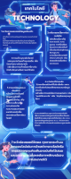

ยินดีต้อนรับสู่พื้นที่รวมไอเดียแต่งหน้าสายฝอสุดปังและความภาคภูมิใจของฉัน
ฉันเป็นนักเรียนคนหนึ่งที่มีความหลงใหลในการแต่งหน้า โดยเฉพาะการสร้างสรรค์ลุคแต่งหน้าสายฝอ (Western Style) ที่เน้นความคมชัด ความมั่นใจ และการขับเน้นโครงหน้าให้โดดเด่น ฉันสนุกทุกครั้งที่ได้ทดลองเทคนิคใหม่ๆ ค้นคว้าเรื่องเครื่องสำอาง ภูมิใจในทุกๆ ลุคที่ได้ฟาดฝีมือ และตื่นเต้นที่จะได้พัฒนาทักษะบิวตี้ของตัวเองให้เก่งขึ้นในทุกๆ วัน
การสร้างสรรค์ลุคสายฝอที่แต่งได้ในชีวิตประจำวัน เน้นงานผิวเนื้อแมตต์ คิ้วอุยตั้งเป็นทรงที่เป็นธรรมชาติ ตาโทนสีน้ำตาลคลาสสิก และปากสีนู้ดสุดจึ้ง เพิ่มความมั่นใจเกินร้อย
การฝึกฝนเทคนิคขั้นสูงด้วยการคัดเบ้าตาแบบ Cut Crease ให้ชั้นตาดูคมลึกชัดเจน กรีดอายไลเนอร์แบบ Foxy Eyes เฉี่ยวๆ คอนทัวร์กรอบหน้าให้มีมิติ และทาปากเนื้อแมตต์อวบอิ่มตามเทรนด์ตะวันตก
